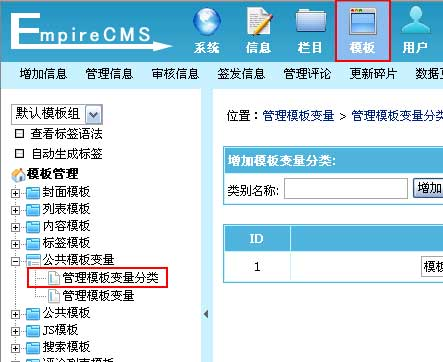
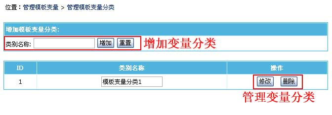
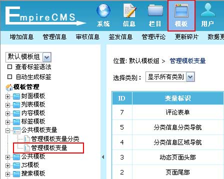
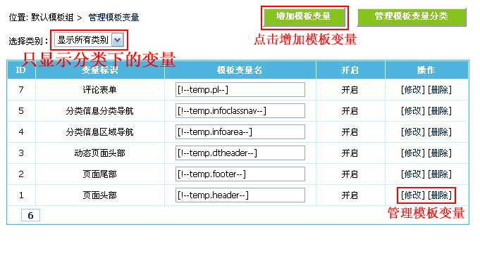
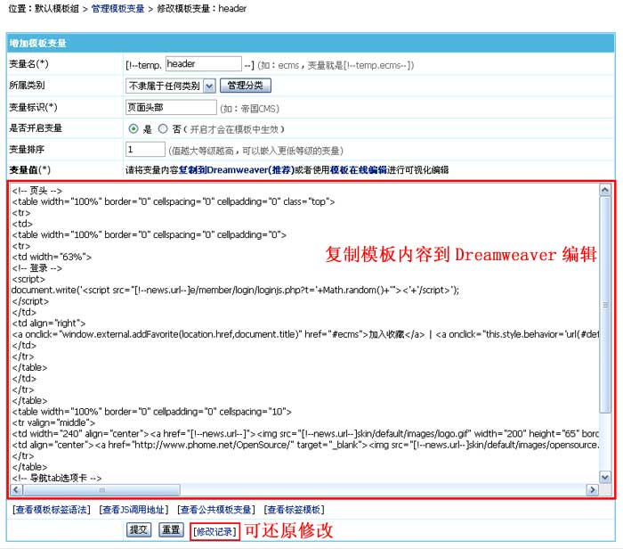
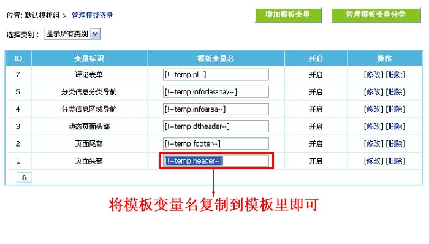
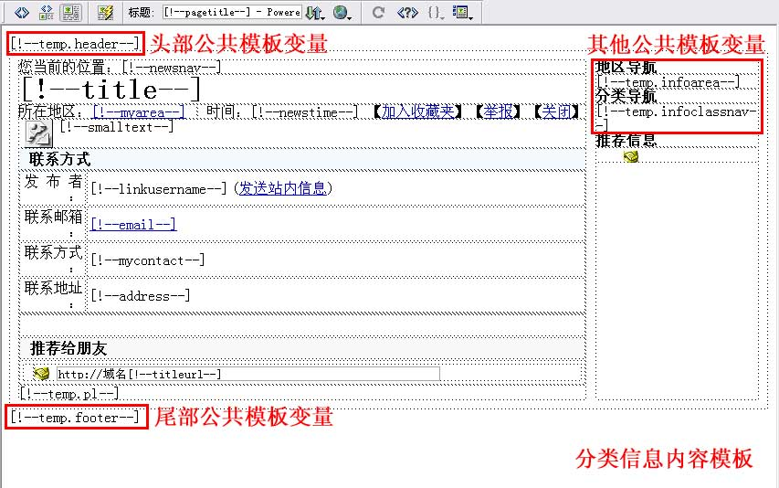
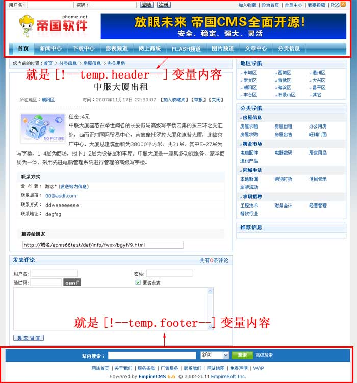

| 公共模板变量是指将模板中相同内容部分存放到变量里，方便在各个模板调用与统一修改。像模板中用到的“[!--temp.*--]”就是公共模板变量。 |
|
||
| 一、管理公共模板变量分类： |
| (一)、公共模板变量分类的说明： |
| 公共模板变量分类方便您管理变量，可对变量进行分类管理。 |
| (二)、管理公共模板变量分类： |
| 1、登录后台，单击“模板”菜单，选择“管理模板变量分类”子菜单，进入管理模板变量分类界面： |
|  |
| 2、进入管理模板变量分类界面： |
|  |
| 二、管理公共模板变量： | ||||||||||||
| 1、登录后台，单击“模板”菜单，选择“管理模板变量”子菜单，进入管理模板变量界面： | ||||||||||||
|  | ||||||||||||
| 2、进入管理模板变量界面： | ||||||||||||
|  | ||||||||||||
| 3、点击“修改”进入公共模板变量修改界面： | ||||||||||||
|  | ||||||||||||
|
| 三、公共模板变量的使用： |
| 1、进入“管理模板变量”界面（见下图）：查看模板变量列表 |
|  |
| 2、将模板变量名加到模板里即可，如图： |
|  |
| 3、将模板变量名加到模板里后，加变量的地方就会显示模板变量值的内容，如图： |
|  |
| 4、以后修改内容只需修改公共模板变量值即可修改所有调用此变量的页面。 |